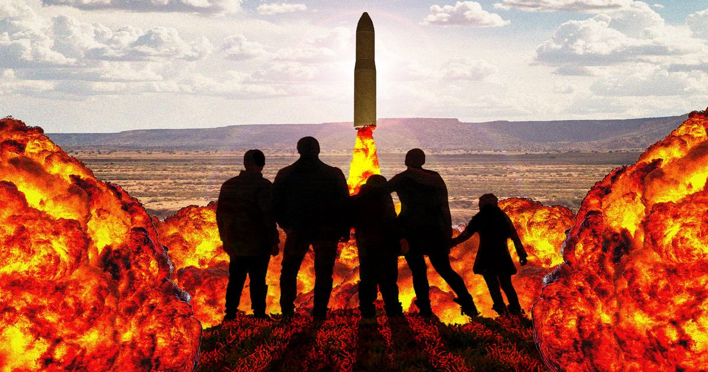

Сообщество Нью-Мексико было местом, где можно построить жизнь. Затем появился завод по производству гиперзвуковых ракет
Castelion - оборонная технологическая компания следующего поколения - строит объект в Rio Rancho Estates, который, как показывают документы, может представлять серьезную пожарную и химическую опасность для соседних общин.